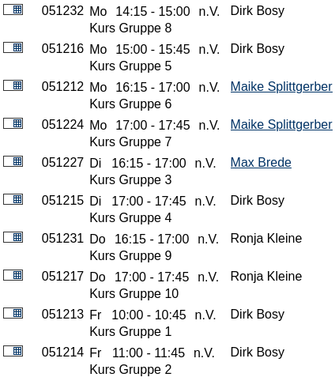
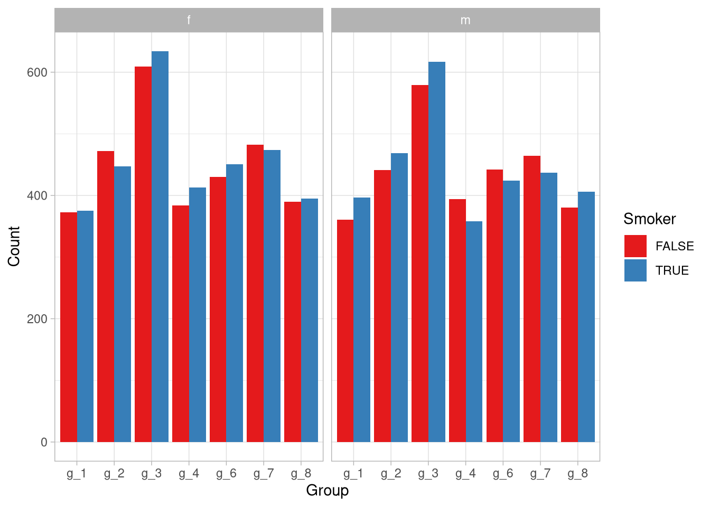
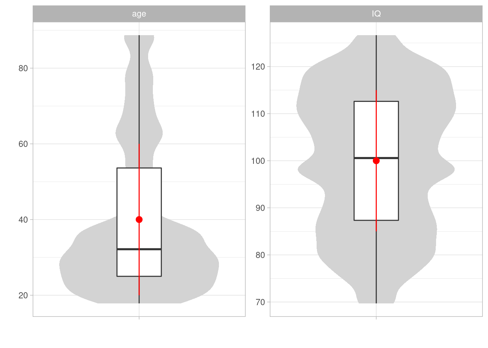
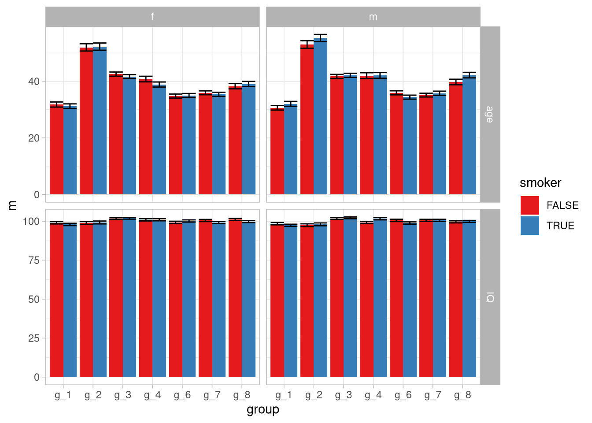
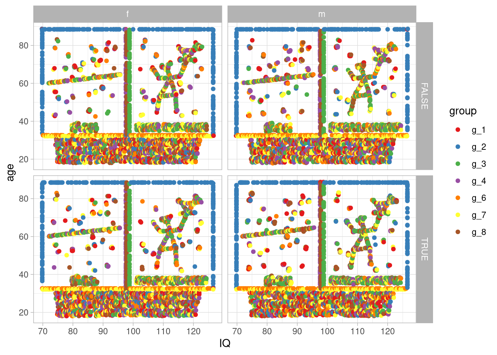
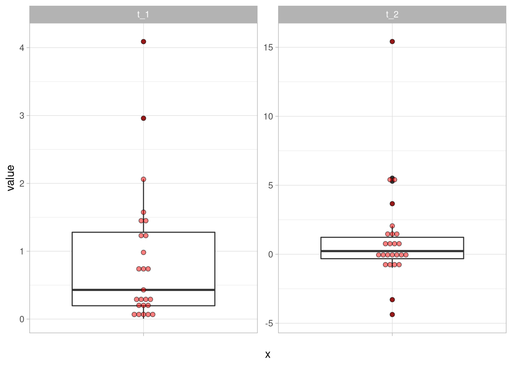
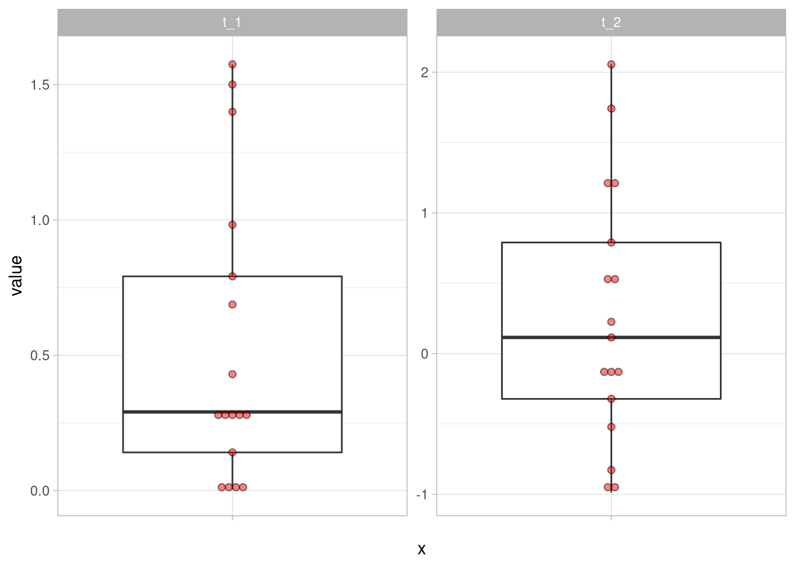
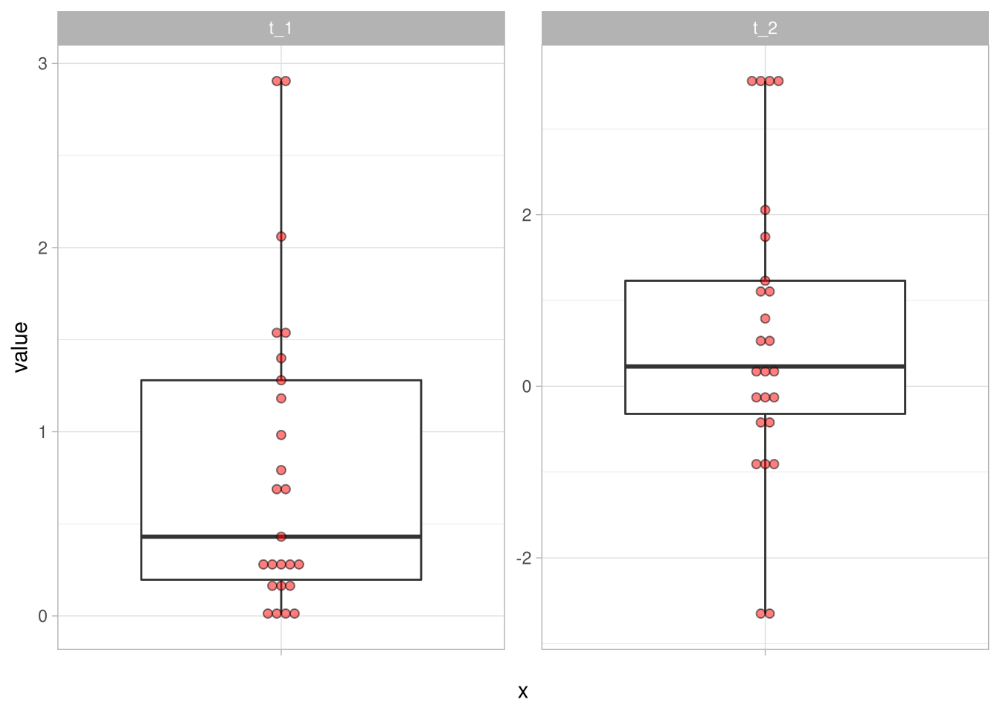

Deskriptive Statistik und Data Cleaning
Organisatorisches
Semesterplan
| Einheit | Vorlesung | Übungswoche | Thema |
|---|---|---|---|
| 1 | 23.04.21 | keine Übung | Deskriptive Statistik |
| Data Cleaning | |||
| 2 | 07.05.21 | KW 19 | Hilfsmittel für die Inferenzstatistik |
| Lineare Regression I | |||
| 3 | 21.05.21 | KW 21 | Lineare Regression II |
| 4 | 04.06.21 | KW 23 | t- Tests |
| einfaktorielle Varianzanalyse | |||
| 5 | 18.06.21 | KW 25 | zweifaktorielle Varianzanalyse |
| 6 | 02.07.21 | KW 27 | Kontrasttests |
Übungsablauf
Es wird alle zwei Wochen eine 45-minütige Vorlesung geben und dazu alternierend online-Übungsstunden in mit je einem Kurs. (Eine Ausnahme ist die erste Woche, in der wir eine Vorlesung haben.)
Übungsablauf

Prüfungsleistung
Gruppenarbeit(4-5 Personen) über 3 Wochen
Termin für die Klausur entweder vor oder mit Anfang in der Klausurphase.
Genauere Informationen gibt es über das Olat.
Als Zulassung für die Gruppenarbeit ist wieder die sinnvolle Bearbeitung von allen bis auf eine Hausaufgabenserien nötig.
Tutorien
Ronja und Katharina geben (online-)Tutorien dieses Semester.
Katharinas Tutorium wird immer dienstags, 14-16 Uhr stattfinden.
Ronjas Tutorium wird immer dienstags, 16-18 Uhr stattfinden.
Deskriptive Statistik
Wozu brauche ich das?
Im Gegensatz zur Inferenzstatistik ist das erklärte Ziel der deskriptiven Statistik, (wie der Name schon sagt) beschreibende Aussagen über die vorliegende Stichprobe zu treffen.
Wir wollen uns also möglichst genau angucken, wie unsere Stichprobe aussieht.
Wozu könnte das gut sein?
Gründe für deskriptive Statistik
Indikatoren zur externen Validität(Verteilung von Organismusvariablen, Demografie,…)
Aussagen über Verteilungseigenschaften
- Schnell zu erfassende Präsentationen von zentraler Tendenz und Streuungen
- Hinweise auf ungewöhnliche Werte (Ausreißer, fehlende Werte,…)
Übersicht über Effekte und Zusammenhänge, inklusive solcher, die möglicherweise nicht a-priori erwartet wurden
deskriptive Statistik
Für einen ganz einfachen, schnellen und umfassenden Überblick über die Daten funktioniert die skim-Funktion aus dem skimr-Paket gut:
skimr::skim(df)| Name | df |
| Number of rows | 12498 |
| Number of columns | 5 |
| _______________________ | |
| Column type frequency: | |
| character | 2 |
| logical | 1 |
| numeric | 2 |
| ________________________ | |
| Group variables | None |
Variable type: character
| skim_variable | n_missing | complete_rate | min | max | empty | n_unique | whitespace |
|---|---|---|---|---|---|---|---|
| group | 0 | 1 | 3 | 3 | 0 | 7 | 0 |
| sex | 0 | 1 | 1 | 1 | 0 | 2 | 0 |
Variable type: logical
| skim_variable | n_missing | complete_rate | mean | count |
|---|---|---|---|---|
| smoker | 0 | 1 | 0.5 | TRU: 6297, FAL: 6201 |
Variable type: numeric
| skim_variable | n_missing | complete_rate | mean | sd | p0 | p25 | p50 | p75 | p100 | hist |
|---|---|---|---|---|---|---|---|---|---|---|
| IQ | 0 | 1 | 100 | 15 | 69.71 | 87.34 | 100.57 | 112.61 | 126.67 | ▅▆▇▇▆ |
| age | 0 | 1 | 40 | 20 | 17.85 | 25.00 | 32.16 | 53.63 | 88.72 | ▇▅▁▂▂ |
Demografie
Einfache, schnell zu erfassende Beschreibung der Stichprobe zum Beispiel über eine Tabelle:
df %>%
count(sex, smoker, group) %>%
pivot_wider(names_from = group,
values_from = n)## # A tibble: 4 x 9
## sex smoker g_1 g_2 g_3 g_4 g_6 g_7
## <chr> <lgl> <int> <int> <int> <int> <int> <int>
## 1 f FALSE 373 472 609 384 430 482
## 2 f TRUE 375 447 634 413 451 474
## 3 m FALSE 361 441 579 394 442 464
## 4 m TRUE 397 469 617 358 424 437
## g_8
## <int>
## 1 390
## 2 395
## 3 380
## 4 406Aber vielleicht ein bisschen übersichtlicher in einer Grafik:
df %>%
count(sex, smoker, group) %>%
ggplot(aes(x = group, fill = smoker, y = n)) +
geom_col(position = 'dodge') +
facet_wrap(~sex) +
labs(x = 'Group',
y = 'Count',
fill = 'Smoker') Man sieht auf einen Blick, dass Geschlecht und Raucher ungefähr gleich aufgeteilt wurden, die Gruppen aber wesentlich unterschiedliche Größen aufweisen!
Aussagen über Verteilungseigenschaften
In der skim-Ausgabe haben wir ja schon sehen können, dass keine fehlenden Werte vorliegen (n_missing war 0).
Wir könnten uns aber noch die Frage stellen, ob Extremwerte in den Gruppen auftauchen, außerdem wollen wir möglichst übersichtlich unsere Verteilungseigenschaften präsentieren.
Das hilft uns zum Einen, um einen besseren Überblick über die Daten zu erhalten, die wir auswerten wollen, zum Anderen hilft es bei einem späteren Bereicht der Leserin, unsere Statistik einzuschätzen. Dazu können wir uns entweder eine Tabelle mit den Verteilungsparametern der numerischen Variablen ausgeben lassen:
df %>%
pivot_longer(where(is.numeric),
names_to = 'variable') %>%
group_by(variable) %>%
summarise(across(
value,
list(
mean = ~ mean(.),
sd = ~ sd(.),
min = ~ min(.),
q1 = ~ quantile(., .25),
median = ~ median(.),
q3 = ~ quantile(., .75),
max = ~ max(.)
),
.names = '{.fn}'
)) %>%
mutate(across(where(is.numeric),
~round(.,2)))## # A tibble: 2 x 8
## variable mean sd min q1 median q3 max
## <chr> <dbl> <dbl> <dbl> <dbl> <dbl> <dbl> <dbl>
## 1 age 40 20 17.8 25 32.2 53.6 88.7
## 2 IQ 100 15 69.7 87.3 101. 113. 127.Oder, wieder ein bisschen übersichtlicher, in einem Diagramm. So könnten wir die ganzen Infos gerade zum Beispiel in einem Boxplot mit eingezeichneten Mittelwerten und Streuungsbalken darstellen:
df %>%
pivot_longer(where(is.numeric),
names_to = 'variable') %>%
ggplot(aes(x = '', y = value)) +
geom_violin(fill = 'lightgrey', color = NA) +
geom_boxplot(width = .25) +
stat_summary(fun = mean,
fun.min = function(x)mean(x) - sd(x),
fun.max = function(x)mean(x) + sd(x),
color = 'red') +
facet_wrap(~variable, scales = 'free') +
labs(x = '',
y = '')
Das Alter ist eindeutig schief verteilt, der IQ dafür mehrgipflig.
Nach der von Tukey aufgestellten Regel (Tukey 1977) haben wir auch keine Ausreißer (dazu auch später mehr).
Darstellung von Effekten und Zusammenhängen
Unterschiede
Da wir eine Reihe von Gruppierungsvariablen haben, könnte der erste Impuls sein, sich die Variablen nach diesen Gruppen aufgeteilt darstellen zu lassen, um mögliche Gruppenunterschiede zu verdeutlichen.
Auch hier können wir uns Tabellen erstellen:
df %>%
group_by(smoker, group, sex) %>%
summarise(across(where(is.numeric),
.fns = list(mean = ~mean(.),
sd = ~sd(.),
n = ~n()))) %>%
mutate(across(where(is.numeric),
~round(.,2)))## # A tibble: 28 x 9
## # Groups: smoker, group [14]
## smoker group sex IQ_mean IQ_sd IQ_n age_mean
## <lgl> <chr> <chr> <dbl> <dbl> <dbl> <dbl>
## 1 FALSE g_1 f 99.0 13.9 373 31.8
## 2 FALSE g_1 m 98.4 13.9 361 30.6
## 3 FALSE g_2 f 98.9 19.3 472 52.0
## 4 FALSE g_2 m 97.4 19.0 441 53.0
## 5 FALSE g_3 f 102. 14.0 609 42.5
## 6 FALSE g_3 m 102. 13.7 579 41.7
## 7 FALSE g_4 f 101. 13.8 384 40.8
## 8 FALSE g_4 m 99.3 13.1 394 42.0
## 9 FALSE g_6 f 99.3 14.6 430 34.8
## 10 FALSE g_6 m 101. 15.4 442 35.9
## age_sd age_n
## <dbl> <dbl>
## 1 17.3 373
## 2 15.3 361
## 3 27.9 472
## 4 27.7 441
## 5 18.2 609
## 6 17.4 579
## 7 19.3 384
## 8 20.3 394
## 9 14.6 430
## 10 14.9 442
## # … with 18 more rowsOder Plots erstellen um die möglichen Unterschiede darzustellen:
df %>%
pivot_longer(cols = where(is.numeric),
names_to = 'variable') %>%
group_by(variable, smoker, sex, group) %>%
summarise(m = mean(value),
sem = sqrt(var(value)/n()),
upper = m + sem,
lower = m - sem) %>%
ggplot(aes(x = group,
y = m,
fill = smoker)) +
geom_col(position = 'dodge') +
geom_errorbar(aes(ymin = lower,
ymax = upper),
position = 'dodge')+
facet_grid( variable ~ sex , scales = 'free')
Das wird zwar ein bisschen unübersichtlich (wenn man das wirklich sinnvoll betreiben wollen würde sollte man sich Gedanken dazu machen, welche Variablen tatsächlich von Relevanz sind), man könnte aber zu dem Schluss kommen dass die IQs relativ ähnlich sind, die Altersgruppen aber nicht.
Zusammenhänge
Zuletzt wollen wir noch gucken, ob in den Daten irgendwelche (linearen) Zusammenhänge direkt ersichtlich sind. Dazu können wir zuerst Korrelationen berechnen, zum Beispiel einmal für die gesamte Stichprobe und einmal für die Untergruppen:
library(magrittr)
df %$%
cor(age,
IQ)## [1] 0.06659135df %>%
group_by(group) %>%
summarise(r = cor(age, IQ))## # A tibble: 7 x 2
## group r
## <chr> <dbl>
## 1 g_1 0.0540
## 2 g_2 0.00747
## 3 g_3 0.110
## 4 g_4 0.0952
## 5 g_6 0.111
## 6 g_7 0.139
## 7 g_8 0.0636Hier ist so weit nichts auffällig. Ein letzter zu überprüfender Aspekt sind die nicht-linearen Zusammenhänge, zum Beispiel über angemessene Plots. Dies können wir zum Einen für die Untergruppen überprüfen wollen:
df %>%
ggplot(aes(x = IQ,
y = age,
color = group)) +
geom_point() +
facet_grid(smoker ~ sex)
Zum Anderen für die gesamte Stichprobe:
df %>%
ggplot(aes(IQ, age, color = group)) +
geom_point(size = .001) +
scale_color_grey()Abb. 1: Original-Comic von xkcd
Data Cleaning
Umgang mit fehlenden Werten
NAs sind das in R zur Codierung von fehlenden Werten genutzte Datenformat.
Sie können in Vektoren (und damit auch tibble-Spalten) jeden Datenformats auftreten:
c(T,NA,F)## [1] TRUE NA FALSEc(1,NA,2)## [1] 1 NA 2c('a',NA,'b')## [1] "a" NA "b"Wenn wir versuche mit einem Vektor zu rechnen, der NAs beinhaltet, können wir auf Probleme stoßen:
aVector <- c(NA,1,2,5,NA,6,8)
length(aVector[aVector > 3])## [1] 5mean(aVector)## [1] NAMit der is.na()-Funktion können wir uns einen logischen Vektor ausgeben lassen, der fehlende Werte codiert. Den können wir dann wie gewohnt benutzen:
sum(is.na(aVector))## [1] 2any(is.na(aVector))## [1] TRUEfehlende Werte und einfache Kennwerte
Die meisten Funktionen im base R Umfang haben ein na.rm-Argument mit dem wir fehlende Werte von Berechnungen ausschließen können. Das kann an vielen Stellen schon eine sinnvolle Lösung sein, zum Beispiel wenn wir die Infos über die Anzahl fehlender Werte nicht verlieren wollen.
Das könnte dann zum Beispiel so aussehen:
mean(aVector)## [1] NAmean(aVector, na.rm = T)## [1] 4.4Dieses Argument können wir auch in die gewohnten Pipelines einsetzen.
Als Beispiel nehmen wir diesen kleinen (unrealistisch unvollständigen) Datensatz df_2:
(df_2 <- read_csv('data/small_nas.csv'))## # A tibble: 12 x 4
## VP group t_1 t_2
## <dbl> <dbl> <dbl> <dbl>
## 1 1 1 3.66 -1.53
## 2 2 2 NA 3.32
## 3 3 3 2.23 NA
## 4 4 4 4.82 4.14
## 5 5 1 0.142 0.537
## 6 6 2 1.86 5.04
## 7 7 3 NA 1.46
## 8 8 4 3.60 3.50
## 9 9 1 0.353 NA
## 10 10 2 NA NA
## 11 11 3 3.79 2.57
## 12 12 4 5.37 4.95Wir könnten jetzt die Pipeline für die Gruppenunterschiede von eben nochmal benutzen, aber um eine Angabe zur Anzahl der fehlenden Werte ergänzen:
df_2 %>%
group_by(group) %>%
summarise(across(matches('t_'),
.fns = list(mean = ~mean(., na.rm = T),
sd = ~sd(., na.rm = T),
n = ~n(),
missing = ~sum(is.na(.))))) %>%
mutate(across(where(is.numeric),
~round(.,2)))## # A tibble: 4 x 9
## group t_1_mean t_1_sd t_1_n t_1_missing t_2_mean
## <dbl> <dbl> <dbl> <dbl> <dbl> <dbl>
## 1 1 1.39 1.97 3 0 -0.5
## 2 2 1.86 NA 3 2 4.18
## 3 3 3.01 1.1 3 1 2.01
## 4 4 4.6 0.91 3 0 4.2
## t_2_sd t_2_n t_2_missing
## <dbl> <dbl> <dbl>
## 1 1.46 3 1
## 2 1.22 3 1
## 3 0.79 3 1
## 4 0.73 3 0NA-Bereinigung von Datensätzen
Vor statistischen Auswertungen kann es aber einfacher sein, den Datensatz komplett von fehlenden Werten zu bereinigen.
Je nach dem Fall und der Person die man fragt, gibt es verschiedene Vorgehensweisen. Wir gucken uns hier genauer den fallweisen Ausschluss und das ersetzen durch Werte der zentralen Tendenz an.
Die Entscheidung für das Auffüllen oder das Ausschließen muss von Fall zu Fall gefällt werden!
Wenn wir zum Beispiel unseren df_2 nochmal angucken, fehlt ein Viertel der Werte.
Hier die Fälle aufzufüllen und so zu tun als würde man mit 133% der Werte arbeiten, die tatsächlich vorlagen, ist offensichtlich schwierig.
Gleichzeitig wird oft das Argument vorgebracht, dass insbesondere diejenigen Versuchspersonen, die in bestimmten Bedingungen keine Antwort produziert haben ein wichtiger Teil der Stichprobe sind und das Auslassen an sich als Form der Antwort betrachtet werden kann.
Wenn wir diese Versuchspersonen ausschließen, verzerren wir nach diesem Argument also systematisch unsere Stichprobe.
Wichtig ist also vor jeder Bereinigung, Überlegungen darüber anzustellen, was im gegebenen Fall gerade die angemessenste Lösung darstellt. Bei unserem Datensatz df_2 sind beide Methoden nicht wirklich gut, der Datensatz ist aber auch extrem.
Fallweiser Ausschluss
Die radikalste Methode ist der Fallweise Ausschluss, also der Ausschluss aller Eintragungen einer Versuchsperson, die mindestens einen fehlenden Wert vorliegen hat.
Als Erinnerung, hier nochmal unser Datensatz df_2:
| VP | group | t_1 | t_2 |
|---|---|---|---|
| 1 | 1 | 3.6612191 | -1.5337696 |
| 2 | 2 | NA | 3.3223479 |
| 3 | 3 | 2.2250924 | NA |
| 4 | 4 | 4.8187796 | 4.1387727 |
| 5 | 1 | 0.1419190 | 0.5373972 |
| 6 | 2 | 1.8635821 | 5.0435449 |
| 7 | 3 | NA | 1.4552116 |
| 8 | 4 | 3.6001703 | 3.5013055 |
| 9 | 1 | 0.3530444 | NA |
| 10 | 2 | NA | NA |
| 11 | 3 | 3.7877141 | 2.5676322 |
| 12 | 4 | 5.3706695 | 4.9490249 |
Wir müssten also die Versuchspersonen ausschließen.
Die einfachste Variante dafür ist, den Datensatz ins wide-Format zu überführen (wie er es in unserem Fall schon vorliegt) und mit drop_na diejenigen Zeilen auszuschließen, die fehlende Werte beinhalten:
df_2 %>%
drop_na()## # A tibble: 7 x 4
## VP group t_1 t_2
## <dbl> <dbl> <dbl> <dbl>
## 1 1 1 3.66 -1.53
## 2 4 4 4.82 4.14
## 3 5 1 0.142 0.537
## 4 6 2 1.86 5.04
## 5 8 4 3.60 3.50
## 6 11 3 3.79 2.57
## 7 12 4 5.37 4.95Ersetzen fehlender Werte
Statt radikal alle Fälle auszuschließen, die mindestens einen fehlenden Wert beinhalten, gibt es auch Ansätze, diese aufzufüllen. Gängige Verfahren hier sind die fehlenden Werte hypothesenunabhängig (also nicht gruppenweise) mit dem (getrimmten) Mittelwert, dem Median oder dem Modus der Gesamtstichprobe aufzufüllen. Die Umsetzung in R sieht dann immer gleich aus, die einzige Änderung findet im Kennwert statt, den man zur Ergänzung wählt.
Hier mal ein Beispiel mit dem getrimmten Mittelwert:
df_2 %>%
mutate(across(where(is.numeric),
~replace_na(.,
mean(.,
na.rm=T,
trim = .05))))## # A tibble: 12 x 4
## VP group t_1 t_2
## <dbl> <dbl> <dbl> <dbl>
## 1 1 1 3.66 -1.53
## 2 2 2 2.87 3.32
## 3 3 3 2.23 2.66
## 4 4 4 4.82 4.14
## 5 5 1 0.142 0.537
## 6 6 2 1.86 5.04
## 7 7 3 2.87 1.46
## 8 8 4 3.60 3.50
## 9 9 1 0.353 2.66
## 10 10 2 2.87 2.66
## 11 11 3 3.79 2.57
## 12 12 4 5.37 4.95Umgang mit Ausreißern
Ausreißerbereinigung sind ein komplexes Thema, über das viel diskutiert werden kann und auch muss.
Da wir uns hier aber im Rahmen einer praktischen Übung befinden sparen wir uns das und nutzen die weit verbreitete Regel, die Tukey (1977) formuliert hat:
Diejenigen Werte sind als Ausreißer zu betrachten, die außerhalb des Intervals
\[Q_1 - 1.5 \cdot \text{IQR} \leq x \leq Q_3 + 1.5 \cdot \text{IQR}\]
liegen. Diese Regel ist auch der in geom_boxplot implementierte Standard, den wir ja auch schon zumindest vom Sehen kennen.
Die Frage ist nun, was wir mit eventuell detektierten Ausreißern machen.
Dafür betrachten wir den folgenden Datensatz df_3:
df_3 %>%
pivot_longer(cols = everything()) %>%
ggplot(aes(y = value, x = '')) +
geom_boxplot() +
geom_dotplot(binaxis = 'y',
stackdir = 'center',
alpha = .5,
fill = 'red',
dotsize = .5) +
facet_wrap(~name,scales = 'free_y')
Auch hier können wir wieder zum radikalen Ausschluss greifen und den Datensatz einfach danach filtern, dass unsere Variablen zwischen den “Tukey Fences” liegen:
df_3 %>%
filter(between(t_1,
quantile(t_1,.25) - 1.5 * IQR(t_1),
quantile(t_1,.75) + 1.5 * IQR(t_1)) &
between(t_2,
quantile(t_2,.25) - 1.5 * IQR(t_2),
quantile(t_2,.75) + 1.5 * IQR(t_2))) %>%
pivot_longer(cols = everything()) %>%
ggplot(aes(y = value, x = '')) +
geom_boxplot() +
geom_dotplot(binaxis = 'y',
stackdir = 'center',
alpha = .5,
fill = 'red',
dotsize = .5) +
facet_wrap(~name,scales = 'free_y')
Oder wir ‘windsorieren’ unsere Ausreißer, indem wir sie durch den Wert der jeweiligen Grenze ersetzen. Wir sagen also, dass diejenigen Werte, die außerhalb der Fences liegen auf den Wert der jeweiligen Grenze gesetzt werden sollen:
df_3 %>%
mutate(across(everything(),
~ifelse(. > quantile(.,.75) + 1.5 * IQR(.),
quantile(.,.75) + 1.5 * IQR(.),
.)),
across(everything(),
~ifelse(. < quantile(.,.25) - 1.5 * IQR(.),
quantile(.,.25) - 1.5 * IQR(.),
.))) %>%
pivot_longer(cols = everything()) %>%
ggplot(aes(y = value, x = '')) +
geom_boxplot() +
geom_dotplot(binaxis = 'y',
stackdir = 'center',
alpha = .5,
fill = 'red',
dotsize = .5) +
facet_wrap(~name,scales = 'free_y')
Organisationsformen von Datensätzen
long vs. wide format
long-format
| Name | RT | Bedingung |
|---|---|---|
| Snake Müller | 2624 | 1 |
| Snake Müller | 3902 | 2 |
| Snake Müller | 6293 | 3 |
| Vera Baum | 1252 | 1 |
| Vera Baum | 2346 | 2 |
| Vera Baum | 4321 | 3 |
wide-format
| Name | RT_1 | RT_2 | RT_3 |
|---|---|---|---|
| Snake Müller | 2624 | 3902 | 6293 |
| Vera Baum | 1252 | 2346 | 4321 |
Die pivot-Funktionen pivot_longer und pivot_wider bieten die Möglichkeit, einen Datensatz von einem in das andere Format zu konvertieren.
longFormat## Name RT Bedingung
## 1 Snake Müller 2624 1
## 2 Snake Müller 3902 2
## 3 Snake Müller 6293 3
## 4 Vera Baum 1252 1
## 5 Vera Baum 2346 2
## 6 Vera Baum 4321 3long to wide
wideFormat <- longFormat %>%
pivot_wider(names_from = 'Bedingung',
values_from = 'RT',
names_prefix = 'RT_')
wideFormat## # A tibble: 2 x 4
## Name RT_1 RT_2 RT_3
## <chr> <dbl> <dbl> <dbl>
## 1 Snake Müller 2624 3902 6293
## 2 Vera Baum 1252 2346 4321wide to long
longFormat <- wideFormat %>%
pivot_longer(cols = -1,
names_prefix = 'RT_',
names_to = 'Bedingung',
values_to = 'RT')
longFormat## # A tibble: 6 x 3
## Name Bedingung RT
## <chr> <chr> <dbl>
## 1 Snake Müller 1 2624
## 2 Snake Müller 2 3902
## 3 Snake Müller 3 6293
## 4 Vera Baum 1 1252
## 5 Vera Baum 2 2346
## 6 Vera Baum 3 4321